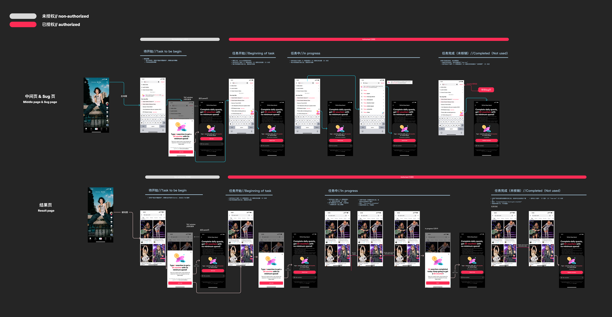
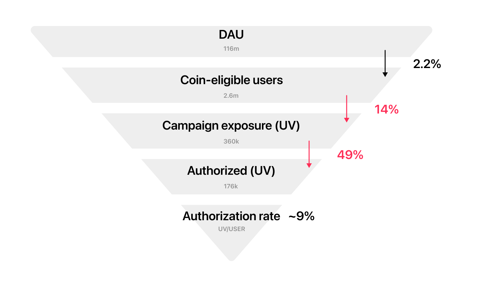

TikTok 搜索激励项目
TikTok 搜索激励在日本已验证有效——但美国第二期面向 7000 万用户开放后，参与率仍接近零。团队的直觉是优化 banner，我推动先把授权漏斗梳理清楚。
三个对症方案，10 天上线：曝光率 14% → 67%，授权率 49% → 60%。

搜索激励机制在日本已经验证成功。问题不在于机制本身——而是为什么美国复制后没能产生同样的效果。
在日本，增加搜索任务激励后核心指标显著提升：整体手搜增长 +4.2%，新搜索用户增长 +9.3%，低活跃搜索用户增长 +14.3%。
美国第一期仅限 TikTok Shop 用户：完成 6 次日搜可获得 $5 优惠券。2024 Q4 数据出现了一个悖论。
+8% PayU/DAU
优惠券带动了真实购买行为，在已授权用户中按预期发挥作用。
~0 手搜活跃增长
9% 可圈选用户中授权率
促进搜索行为增长的核心目标没有实现。
第二期计划扩展至全量美国用户（约 7000 万 DAU）——但一期已经暴露出参与率接近零的问题。
单纯扩大受众解决不了根本问题。在放量之前，我们需要先搞清楚哪里出了问题。
最大的挑战不是技术问题，而是判断问题出在哪——是激励力度不够、触点位置不对、还是用户根本没有被激励搜索的动机？几个方向都有可能，但资源有限，判断错了就浪费一个迭代周期。
一期被圈选用户中仅有约 9% 完成授权——这是一个触达问题，而不是转化问题。
将授权漏斗拆解为两个独立事件：曝光和授权。数据确认曝光是更大的杠杆：不解决曝光，86% 的用户永远看不到活动。


活动存在结构性天花板
T&C 弹窗只在用户搜索后返回中间页时触发，首次进入或停留在结果页的用户完全错过。曝光天花板 14%，和活动质量无关。
授权路径需要绕一个弯
看到 banner 的用户无法直接授权——需要跳转详情页才能完成。这个场景切换引入了犹豫。49% 的流失不是不感兴趣，是可挽回的摩擦。
三个方向，每个对应漏斗中一个具体的缺口。
按漏斗位置排序：D01–D02 扩大触达。D03 降低授权摩擦。
在搜索结果页新增活动挂件
团队的默认假设：优化现有中间页 banner。
中间页不是表现差，而是结构性受限。在只能触达 14% 用户的场景内做优化，永远无法撬动总体指标。结果页的用户已完成搜索，是更大、更有意图的受众——新增约 2500 万被动搜索用户触点，同时不打断搜索流程。

扩展触发逻辑——从「仅返回」到「进入 + 返回」
触发条件只绑定在「搜索后返回」，对首次进入形成盲区。
这是逻辑修正，不是设计改动。资格认定不要求用户之前搜索过，触发条件没有理由只绑定在「返回」——扩展后每次 session 曝光机会翻倍，近零工程成本。频率控制防止过度打扰：X 次无点击后退场 3 天。
更多曝光会增加骚扰感——频率控制是最低限度的约束，是校准，不是取消。
授权从 4 步压缩到 1 步——整合进 T&C 底部弹窗
原流程：点击 banner → 跳转详情页 → 阅读 → 点击「立即加入」。4 步，完全打断搜索场景。
整合进 T&C 底部弹窗：文案 + T&C 链接 + 立即加入。无需离开搜索场景即可完成授权。「了解更多」保留，但不再是必经步骤。
点击 banner → 跳转详情页 → 阅读落地页 → 点击「立即加入」
点击 banner → 底部弹窗（文案 + T&C + 立即加入）→ 完成授权

针对用户人群划分在本次设计中不是加分项，而是更多的「打扰」。
我识别出了一个额外的曝光机会：在电商搜索结果页顶部增加活动 banner，混排在结果流中。从逻辑上看很合理——电商意图用户正是 TikTok Shop 优惠券的目标受众。
方案在跨职能评审中被否决。
用户已经能看到挂件了
D01 的结果页挂件已经覆盖了这批用户。增加顶部 banner 只是重复曝光——增加了干扰，却没有扩大覆盖面。
打扰了高意图购物时刻
在电商搜索结果中插入活动打断了用户主动购买意图最强的时刻。转化损耗很可能超过授权率的提升收益。
好的产品判断不只是知道该做什么——还要识别出一个看似合理的想法，何时制造了比它所解决的问题更糟糕的权衡。曝光最大化有会复利累积的用户体验成本。
曝光率 14% → 67%。授权率 49% → 60%。10 天冲刺上线。
先诊断，再解决
这一个框架决策——把曝光和转化分开作为两个独立问题——决定了做什么、以什么顺序做。
产品逻辑改动可以胜过设计改动
进入触发的修复是逻辑改动，不是设计改动。零视觉改动，曝光机会翻倍。杠杆最高的产品决策往往在屏幕上看不见。
知道什么时候该放弃一个好想法
被否决的电商顶部 banner 逻辑上合理，但制造了更糟糕的权衡。识别这种权衡，是这个项目培养的核心产品能力。
「这个项目中最重要的决策，发生在任何解决方案提出之前——先梳理漏斗，抵制在诊断之前就着手重新设计的本能。」
— 项目复盘